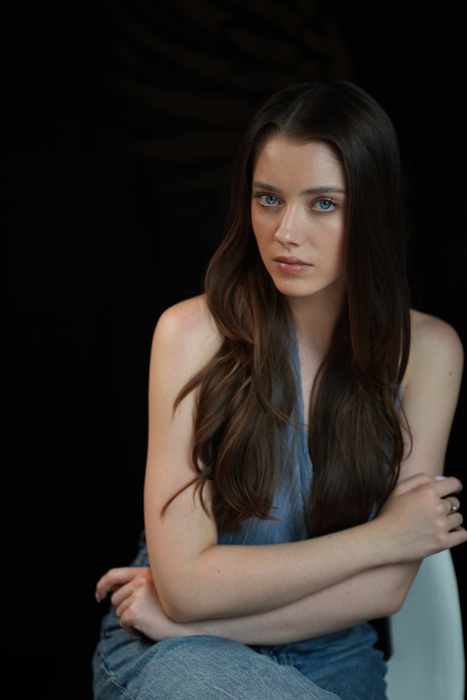
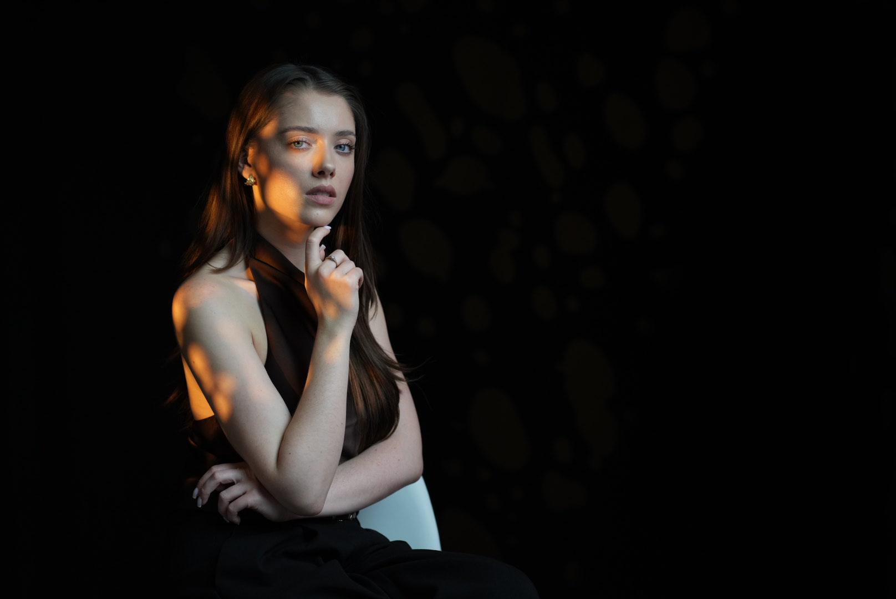

85 mm · f/2.2 · 1/250 s · ISO 320
Sesja wizerunkowa
Nie musisz lubić swoich zdjęć. Ani umieć pozować.
Każdy portret przygotowuję indywidualnie, na zamówienie: pod Twój charakter i cel, który chcesz osiągnąć.
01 · Cel / 05
Najpierw pytam, gdzie to zdjęcie trafi i kto je zobaczy.
- profilkwadrat
- strona zespołupion
- ofertapoziom
- wywiadpion
- program konferencjikwadrat
02 · Wrażenie / 05
Jakie wrażenie chcesz zrobić?

03 · Światło / 05
Światło dobieram dopiero po rozmowie.

Światło zastane
Gdy wnętrze ma wyglądać tak jak na co dzień.

Światło ustawione
Gdy takiego światła nie ma i trzeba je zrobić. Te plamy to reflektor, nie słońce.
04 · Kadr / 05
Szeroko widać miejsce. Blisko widać Ciebie.


05 · Zespół / 05
Jedno światło dla całego zespołu. Każdy wygląda po swojemu.


Wszystkie trzy 85 mm · 1/250 s · to samo miejsce i to samo światło
Napisy końcowe
ZdjęciaMariusz Świerguła
Doświadczenie20 lat pracy z ludźmi, od zespołów po zarządy · ponad 300 portretów pracowników
Przed moim obiektywem stawali między innymiAdam Michnik · Jerzy Pilch · Janina Paradowska · Kuba Wojewódzki · Katarzyna Kolenda‑Zaleska
SprzętSony α7R V, obiektyw 85 mm
Plan zdjęciowyŁódź albo Twoje biuro, także poza Łodzią
Scenariuszpisany od nowa dla każdej osoby
W roli głównejTy